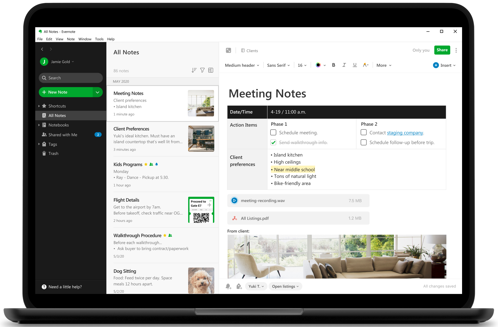
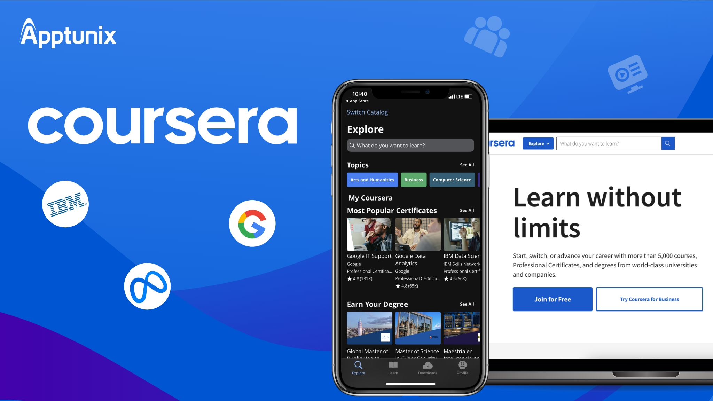

Evernote

Written by:
Aravind Chundu
Posted:
1/1/2024
Evernote is kind of like a magical digital notebook where you can put all your stuff, like notes from class, important emails, and even pics of what you wrote on the whiteboard. It's supposed to make life easier because you can find anything really fast with its awesome search feature, which can even read your scribbly handwriting in photos.
This app is super handy for group work, too. Imagine being able to throw all your thoughts and updates in one spot where everyone in your group can see and add their own bits anytime. It means you can relax more about having to meet up and instead, focus on getting stuff done from your mobile device/laptop.
But, not everyone might think Evernote is the best choice. If you're someone who just wants a simple place to jot down notes or share a file now and then, Evernote might seem a bit overwhelming. It's got lots of extra stuff that's cool but can be a bit much to get the hang of. On top of that, if you really want to dive deep into using Evernote for everything, you'll have to pay for it, and not everyone wants to do that, especially when there are simpler, free options like Google Drive out there.
Google Drive is straightforward, and you're probably already using it for some things. It doesn't have all the fancy features Evernote has, but it does a great job with the basics of taking notes and sharing stuff with others, without complicating things.
In the end, Evernote could totally change the game in terms of keeping all your school or work stuff organized in one place. But it's not for everyone. If you like being super organized and don't mind learning how to use a new app, Evernote might be perfect for you. But if you prefer to keep things simple or you're watching your spending, there might be better options for you out there.
Rating: B
Visit Evernote.
Coursera

Written by:
Aravind Chundu
Posted:
1/1/2024
Coursera is basically a huge online classroom where you can learn from some of the top universities and companies out there, like Stanford, Yale, and Google. It’s like having VIP access to all sorts of classes, from tech to business to art, without even leaving your house.
What’s really nice about Coursera is that you can fit learning into your own schedule. Whether you’re working, going to school, or just have a busy life, you can watch lectures, take quizzes, and chat with other students whenever you have time. And if you’re worried about the cost, Coursera offers ways to learn for free or get financial help for some certifications.
However, there are a couple of things to consider. First, if you’re aiming for an official certificate or special courses, you might need to pay. Also, learning on your own time means you need to be pretty good at managing your time and keeping yourself motivated. Without synchronous classes, some people might miss interacting directly with teachers and classmates.
Another point is that not everyone loves learning on their own through a screen. Some people prefer the immediate feedback and social aspect of traditional classrooms. This kind of self-paced learning might not suit everyone because it can feel a bit less engaging and sometimes a bit lonely.
But even with these points in mind, Coursera still offers a lot. It’s super flexible, which is great for fitting learning into any schedule. On top of this, the range of courses is massive, and the quality of the material is high since it comes from some of the best places around. So, if you’re okay with learning on your own and managing your own schedule, Coursera can be an amazing resource. It opens up a lot of doors for learning new things and getting ahead, making it a really good option for a lot of people.
Rating: A
Explore Coursera.
Modern Niche AI Tools
Perplexity AI – Get in-depth, sourced info for your studies or research with Perplexity AI. It’s like having a research assistant that boosts how fast you can write papers.
Eightify – No time for long videos? Eightify watches them and gives you the key points and when they happen. Perfect for quick learners.
Otter.ai – Turn your talks and lectures into text with Otter.ai. Great for anyone who wants to catch all the details without missing a beat.
Tools that Branch Out
Forest – Grow trees while staying focused on your tasks with Forest. It's perfect for managing screen time and keeping you productive.
Asana Rebel – Mix yoga and fitness into your daily routine to boost your focus and productivity. Asana Rebel is ideal for anyone looking to balance work and wellness.
Goodreads – Find your next great read and track your reading progress with Goodreads. It's a treasure trove for those who love to learn through books.
Habitica – Turn your to-do list into a fun game with Habitica. It's the motivation boost you need to tackle tasks and build productive habits.